프라임칼리지 벼락치기 연구소
2026학년도 | 10문항 | g = 10 m/s²
용수철에 매달린 질량이 m인 물체를 마찰이 없는 평면에서 길어지는 방향으로 10 cm 당긴 후에 놓아주었다. 이 물체는 좌-우로 왕복운동을 하는데, 주기는 0.5초이고 원점으로 돌아왔을 때의 속력은 1.5 m/s이다. 운동 시작 후 0.2초 후의 변위와 속력을 구하시오.
| 기호 | 의미 | 단위 |
|---|---|---|
| x | 시간 t에서의 변위 (평형 위치로부터 떨어진 거리) | m |
| x0 | 변위의 진폭 — 평형 위치에서 최대로 벗어난 거리 | m |
| T | 주기 — 한 번 왕복하는 데 걸리는 시간 | s (초) |
| ω | 각진동수 — 단위 시간당 회전하는 각도 (= 2π/T) | rad/s |
| vx | 시간 t에서의 속도 (변위를 시간으로 미분한 값) | m/s |
| v0 | 속도의 진폭 — 평형 위치(원점) 통과 시의 최대 속력 (= ωx0) | m/s |
| m | 물체의 질량 | kg |
| t | 경과 시간 | s (초) |
검증: 에너지 보존으로 확인해볼 수 있어! vx² = v0² − ω²x²에 대입하면:
vx² = 1.5² − (4π)² × 0.0809² = 2.25 − 1.034 = 1.216, vx = 1.10 m/s
ωx0 = 4π × 0.1 = 1.257 m/s를 쓰면: vx² = 1.257² − (4π)² × 0.0809² = 1.58 − 1.03 = 0.55, vx = 0.74 m/s
문제에서 v0 = 1.5 m/s가 주어져 있으므로 이 값을 속도의 진폭으로 사용하는 게 출제 의도야!
변위: x(0.2) ≈ −8.09 cm (반대 방향)
속력: |vx(0.2)| ≈ 0.88 m/s
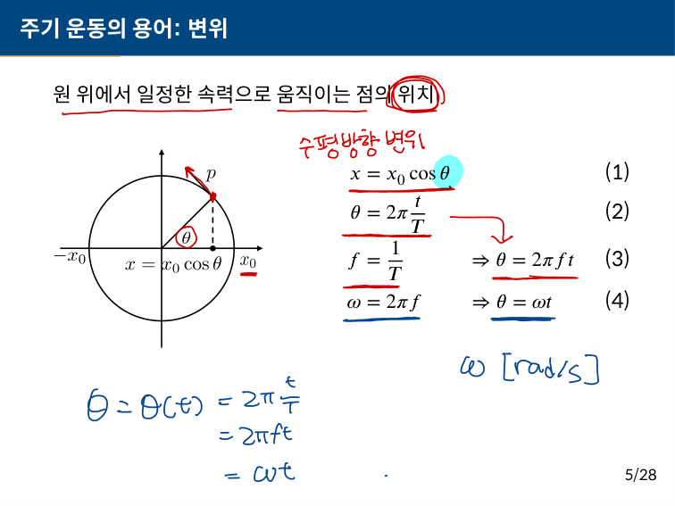
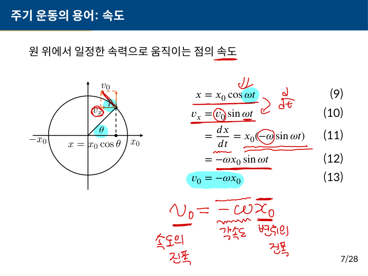
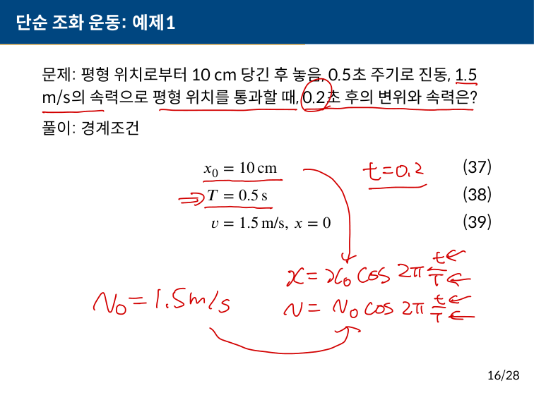
일정한 속력의 파동에 대하여 파장이 2배 증가하는 경우, 진동수와 주기는 어떻게 달라지는가?
| 기호 | 의미 | 단위 |
|---|---|---|
| v | 파동의 전파 속력 (매질을 통해 퍼져나가는 속도) | m/s |
| f | 진동수 (주파수) — 1초 동안 진동하는 횟수 | Hz (= 1/s) |
| λ | 파장 — 파동의 한 주기에 해당하는 공간적 길이 (마루~마루) | m |
| T | 주기 — 한 번 진동하는 데 걸리는 시간 (= 1/f) | s (초) |
핵심 정리: 파동 속력이 일정할 때, 파장 ↑ → 진동수 ↓ → 주기 ↑. 전부 반비례 관계라서, 파장이 n배면 진동수는 1/n배, 주기는 n배가 돼!
진동수: 1/2로 감소
주기: 2배로 증가
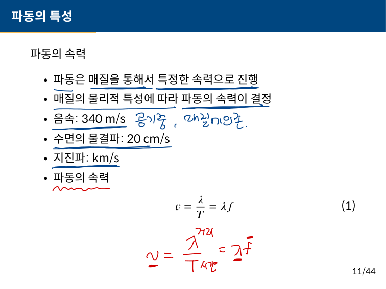
정지해 있는 소방차의 사이렌이 200 Hz라면, 이 소방차가 시속 50 km/h로 나를 향해 달려올 때, 내가 듣는 주파수는 얼마인가?
| 기호 | 의미 | 단위 |
|---|---|---|
| f | 음원의 고유 진동수 (정지 상태에서 발생하는 소리의 진동수) | Hz |
| f' | 관측자가 실제로 듣는 진동수 (도플러 효과 적용 후) | Hz |
| v | 음속 — 소리가 공기 중에서 전파되는 속력 | m/s |
| vs | 음원(소방차)의 이동 속력 | m/s |
| vo | 관측자(나)의 이동 속력 (이 문제에서는 0) | m/s |
도플러 효과 공식 외우는 법: "관측자는 위, 음원은 아래"
f' = f × 1 / (1 ∓ vs/v)
다가오면 진동수 ↑ (관측자 +, 음원 −), 멀어지면 진동수 ↓ (관측자 −, 음원 +)
f' ≈ 208.5 Hz
원래 200 Hz보다 높은 음으로 들린다 (약 4.3% 증가)
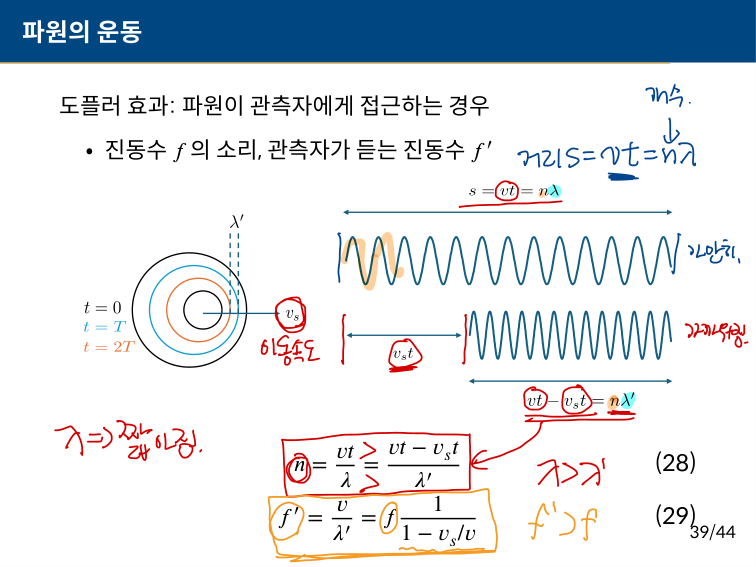
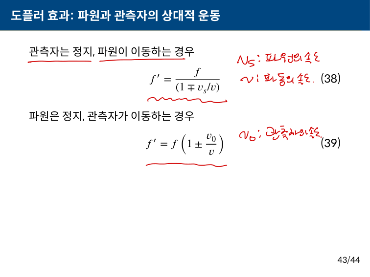
아래 그림과 같이 전하 세 개가 놓여 있다. 전하 q1에 작용하는 힘의 크기와 방향을 구하시오.
그림: q2 = −44 μC --- 10 cm --- q1 = +15 μC --- 10 cm --- q3 = +13 μC
| 기호 | 의미 | 단위 |
|---|---|---|
| q1, q2, q3 | 각 전하의 전하량 (양수면 양전하, 음수면 음전하) | C (쿨롱) |
| μC | 마이크로쿨롱 = 10-6 C (전하량의 단위) | C |
| F | 두 전하 사이에 작용하는 전기력 (힘) | N (뉴턴) |
| F21 | q2가 q1에 미치는 힘 | N |
| F31 | q3가 q1에 미치는 힘 | N |
| r | 두 전하 사이의 거리 | m |
| k | 쿨롱 상수 (= 9 × 109 N·m2/C2) | N·m2/C2 |
힘의 방향 판단법: 같은 부호 → 척력(밀어냄), 다른 부호 → 인력(끌어당김). 이 문제에서 q1 입장에서 왼쪽의 q2(음전하)는 끌어당기고, 오른쪽의 q3(양전하)는 밀어내니까 두 힘 다 왼쪽 방향이야!
크기: F = 769.5 N
방향: 왼쪽 (q2 방향)
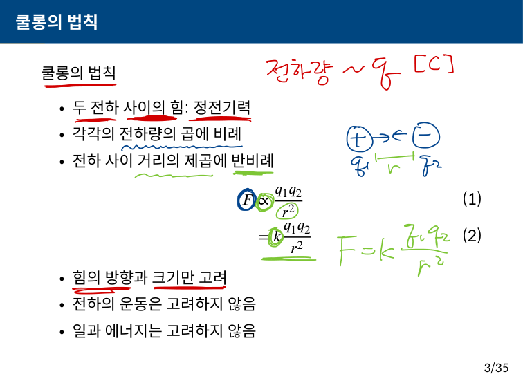
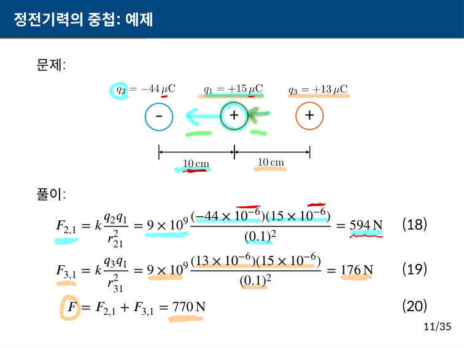
x축 상의 원점에 놓여있는 전하 +1.5 × 10−9 C이 놓여져 있다. 이 전하로부터 거리 10 cm 떨어진 지점에서의 전기장의 세기와 방향을 구하시오. 그리고 위에서 구한 전기장의 세기가 10%가 되는 지점을 구하시오.
| 기호 | 의미 | 단위 |
|---|---|---|
| E | 전기장의 세기 — 단위 양전하가 받는 힘의 크기 | N/C (= V/m) |
| Q | 전기장을 만드는 원천 전하의 전하량 | C (쿨롱) |
| r | 전하로부터 전기장을 측정하는 지점까지의 거리 | m |
| r' | 전기장이 10%가 되는 새로운 거리 | m |
| k | 쿨롱 상수 (= 9 × 109 N·m2/C2) | N·m2/C2 |
전기장은 거리의 제곱에 반비례해! 전기장이 1/10이 되려면 거리가 √10배 (≈ 3.16배)로 멀어져야 한다는 거야. 이건 중력도 마찬가지!
전기장 세기: E = 1350 N/C
방향: +x 방향 (전하에서 멀어지는 방향)
전기장이 10%가 되는 거리: r' ≈ 31.6 cm (= 0.1√10 m)
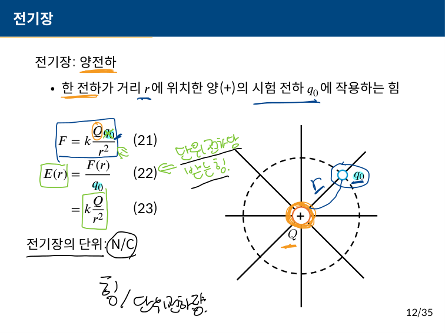
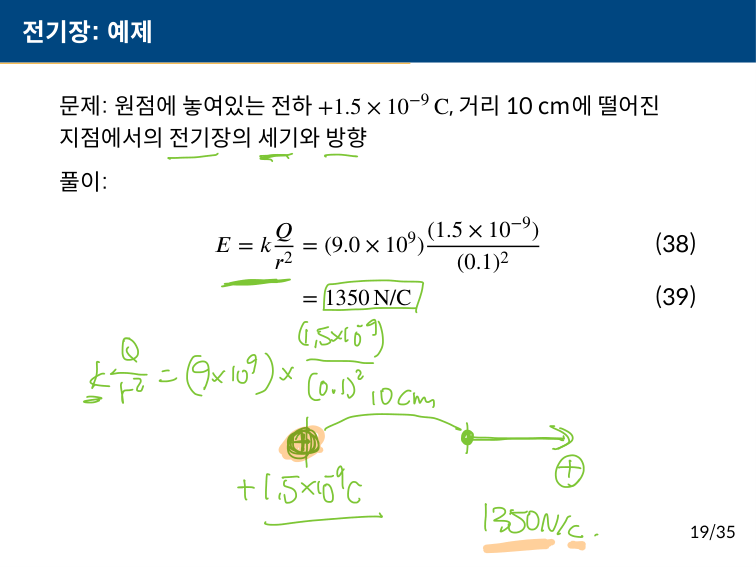
전자석의 N극과 S극 사이의 간격은 10 cm이다. 전자석이 만드는 자기장의 세기가 2.0 T일 때, 도선에 작용하는 힘이 5.0 N이라면 도선에 흐르는 전류는 얼마인가?
| 기호 | 의미 | 단위 |
|---|---|---|
| F | 자기장 속 도선에 작용하는 힘 | N (뉴턴) |
| B | 자기장의 세기 (자기 선속 밀도) | T (테슬라) |
| I | 도선에 흐르는 전류의 세기 | A (암페어) |
| L | 자기장 안에 있는 도선의 길이 | m |
| θ | 전류 방향과 자기장 방향 사이의 각도 | ° (도) |
F = BIL에서 θ를 안 써도 되는 경우: 도선이 자기장에 수직일 때! sin 90° = 1이니까 그냥 F = BIL이 돼. 도선이 자기장에 평행하면 sin 0° = 0이라 힘이 0이야!
I = 25 A
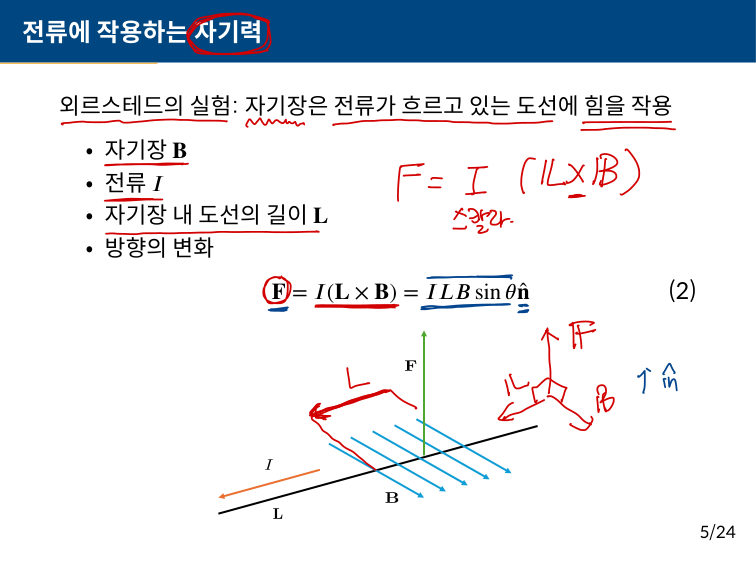
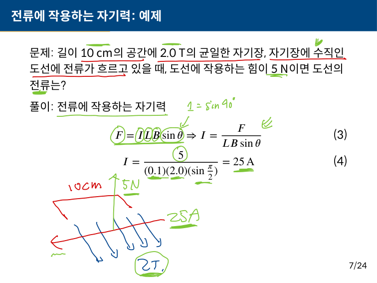
직선도선에 15 A의 전류가 흐르는 경우, 도선으로부터 2 m 떨어진 지점에서의 자기장을 구하시오.
| 기호 | 의미 | 단위 |
|---|---|---|
| B | 도선 주변에 생기는 자기장의 세기 | T (테슬라) |
| I | 직선 도선에 흐르는 전류의 세기 | A (암페어) |
| r | 도선으로부터 자기장을 측정하는 지점까지의 수직 거리 | m |
| μ0 | 진공의 투자율 — 자기장 공식에 등장하는 상수 (= 4π × 10−7 T·m/A) | T·m/A |
| μT | 마이크로테슬라 = 10−6 T (자기장 세기의 단위) | T |
자기장의 방향은 오른손 법칙으로 결정해! 오른손 엄지를 전류 방향으로 향하게 하면 나머지 네 손가락이 감아쥐는 방향이 자기장 방향이야. 도선 주위를 원형으로 감싸는 형태!
B = 1.5 × 10−6 T = 1.5 μT
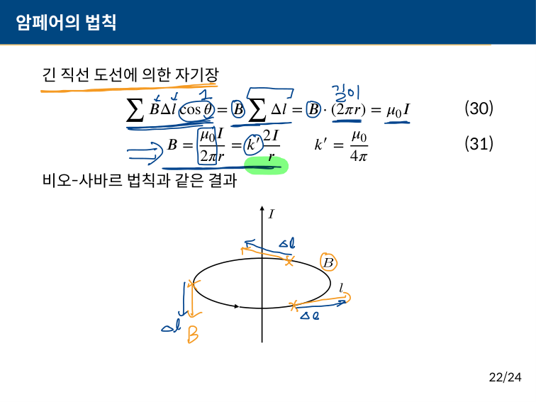
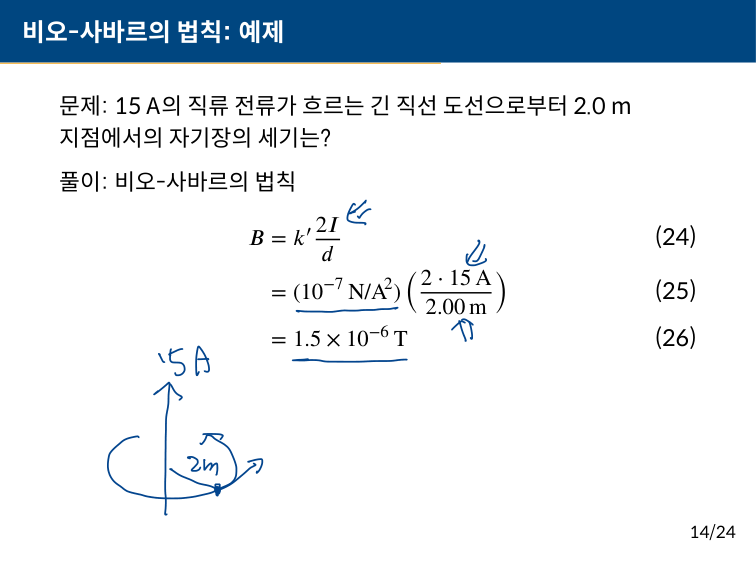
자기장이 0.15 T인 전자석 안에 감은수가 10이고 한 변의 길이가 0.05 m인 정사각형 코일이 자기장과 평행하게 놓여 있다. 이 코일을 0.1초 동안에 자기장 밖으로 꺼낸다면, 코일에 발생하는 기전력은 얼마인가?
| 기호 | 의미 | 단위 |
|---|---|---|
| ε | 유도 기전력 — 자속 변화로 코일에 발생하는 전압 | V (볼트) |
| N | 코일의 감은수 (도선을 몇 바퀴 감았는지) | 회 |
| B | 자기장의 세기 | T (테슬라) |
| A | 코일의 단면적 (자기장이 통과하는 넓이) | m2 |
| Φ | 자기 선속(자속) — 코일을 통과하는 자기장의 총량 (= B × A × cosθ) | Wb (웨버) |
| ΔΦ | 자기 선속의 변화량 (나중 - 처음) | Wb |
| Δt | 자속이 변하는 데 걸리는 시간 | s (초) |
| θ | 자기장 방향과 코일 면의 법선(수직) 방향 사이 각도 | ° (도) |
렌츠의 법칙: 유도 기전력은 자속 변화를 방해하는 방향으로 생겨. 자속이 줄어들면 이를 유지하려는 방향으로 전류가 흘러!
ε = 37.5 mV = 0.0375 V
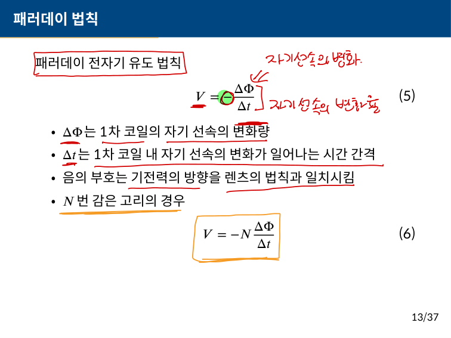
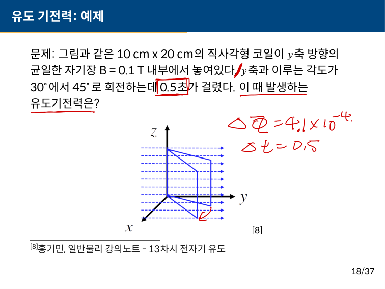
강압 트랜스 중의 하나는 220 V를 110 V로 낮추는 변압기이다. 이 강압 트랜스의 1차 코일의 감은수가 100일 때, 출력 전압을 110 V로 낮추려면 2차 코일의 감은수는 얼마여야 하는가?
| 기호 | 의미 | 단위 |
|---|---|---|
| V1 | 1차 코일(입력 쪽)의 전압 | V (볼트) |
| V2 | 2차 코일(출력 쪽)의 전압 | V (볼트) |
| N1 | 1차 코일의 감은수 | 회 |
| N2 | 2차 코일의 감은수 (구해야 하는 값) | 회 |
| I1, I2 | 각 코일에 흐르는 전류 (전력 보존: V1I1 = V2I2) | A (암페어) |
강압 vs 승압:
- 강압 (step-down): V2 < V1 → N2 < N1 (2차 코일 감은수가 적어)
- 승압 (step-up): V2 > V1 → N2 > N1 (2차 코일 감은수가 많아)
- 이상적인 변압기에서는 전력이 보존돼: V1I1 = V2I2
N2 = 50회
전압이 1/2로 줄어드니까 감은수도 1/2이 된다!
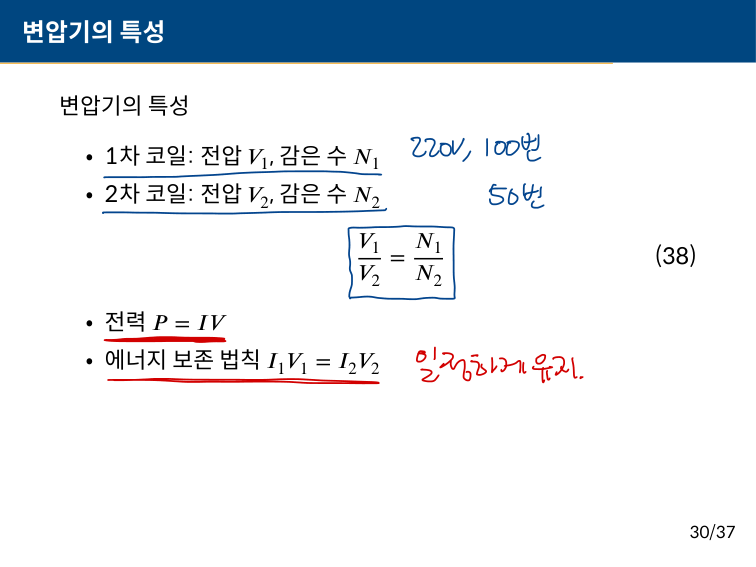
가정에서 사용하는 220 V, 1 kW 헤어드라이기의 소모전류와 저항을 구하시오.
| 기호 | 의미 | 단위 |
|---|---|---|
| P | 전력 (소비 전력) — 단위 시간당 소비하는 에너지 | W (와트) = J/s |
| V | 전압 — 두 지점 사이의 전위차 (전기적 압력) | V (볼트) |
| I | 전류 — 단위 시간당 흐르는 전하의 양 | A (암페어) |
| R | 저항 — 전류의 흐름을 방해하는 정도 | Ω (옴) |
| kW | 킬로와트 = 1000 W (전력의 단위) | W |
전력 공식 3가지 (다 외워둬!):
P = VI (기본)
P = I2R (전류와 저항으로)
P = V2/R (전압과 저항으로)
상황에 따라 편한 걸 골라 쓰면 돼!
전류: I ≈ 4.5 A
저항: R ≈ 49 Ω
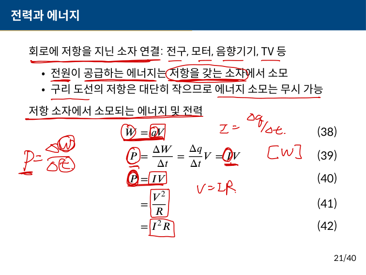
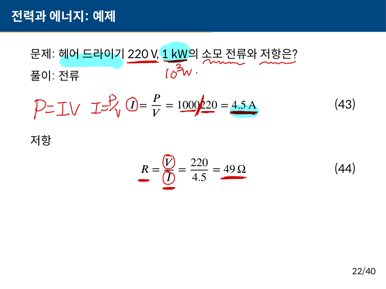
일반물리 기말고사 풀이 | 프라임칼리지 벼락치기 연구소
9강~15강 범위 | g = 10 m/s²